Read the market. Measure the field.
Before anything was drawn, three agents read the market and the audience, and one of them opened 19 live dental practice sites in a browser and measured them: colours, type sizes, buttons, motion, and where the price and the booking button sit.
- 14 of 19
- sell calm: cream and pastel self-care, spa, or dark luxury.
- 8 of 19
- sit on the same warm cream. None runs a saturated colour as the page's ground.
- 10 of 19
- pair a serif headline with a grotesk. The median hero headline is 71px at 1440 wide.
- 15 of 19
- use pill buttons; 14 of 19 use no shadows on cards.
- 9 of 15
- of the sites probed have no scroll animation at all.
- 5 of 19
- show a price on the home page. None puts the first visit's price and length beside the booking button.
What none of the 19 do
- A high-energy general practice. The loud sites are aligner retailers and a celebrity cosmetic brand.
- A saturated ground. Orange and tangerine, true yellow and bright green are unowned.
- The dentist speaking, in the first person, in the first screen.
- Live information in the hero: next openings, a first-visit price, an open-now state.
- Type that plays, or small, fast, physical interaction as the brand's energy.
- Anything that acknowledges the time of day.
“The gap that follows: a general practice that looks as confident as the aligner retailers past the first screen, in a colour family nobody holds, with the dentist’s face and first-person voice in the hero.”research/01b, Part 5
The team also took 85 screenshots of those sites. They are not published: the sites belong to real practices. The measurements are in the visual capture; the market and audience reading in research/01 and research/02; motion techniques in research/03.
One idea: teeth are for biting.
“Dental sites show smiles, rooms, or nothing dental at all. None shows what teeth are for.” From that came one owned device, the bite, a scalloped notch out of a corner. It crops the photographs, it is the subject of the still lifes, and it is what happens when you press a button.
Never
Stock smiles · Tooth icons or tooth logos · Blue or teal · Gradients as decoration · Glass panels · Drop shadows · Star rows · Emoji · A centred hero with two pills · “Reimagined” · Invented numbers
Colour: four palettes, then the photographs decided
Four palettes were set on identical components and judged on screen. Tangerine and lime won. When the generated photographs came back a few steps off the asked-for colours, the team stopped fighting them: the page's ground was sampled from the hero portrait's backdrop and the lime from the apple portrait's, so the two photographs bleed into their fields with no seam. Open the colour specimen.
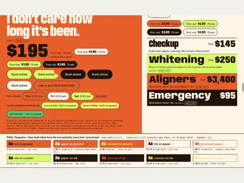
Final. 1440 wide. Ground and counter sampled from the hero and apple portraits, so each photograph bleeds into its own field. Contrast check.
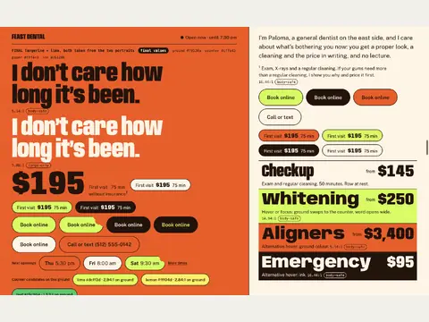
Final. 1440 wide. Ground and counter sampled from the hero and apple portraits, so each photograph bleeds into its own field.
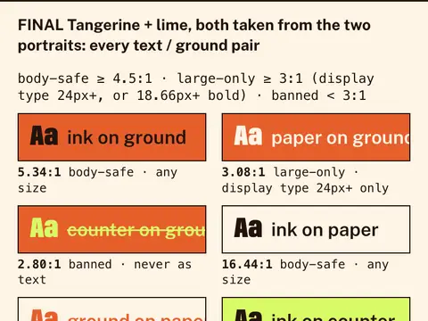
Final. 390 wide. Ground and counter sampled from the hero and apple portraits, so each photograph bleeds into its own field. Contrast check.
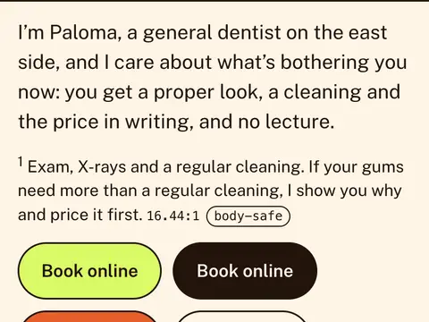
Final. 390 wide. Ground and counter sampled from the hero and apple portraits, so each photograph bleeds into its own field. On paper.
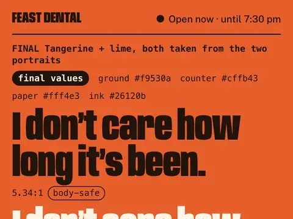
Final. 390 wide. Ground and counter sampled from the hero and apple portraits, so each photograph bleeds into its own field.
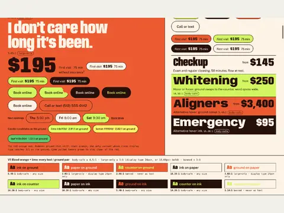
V1, blood orange and lime. 1440 wide. Out: reads tomato before it reads orange, and sits close to one aligner chain's red. Contrast check.
Show all 18
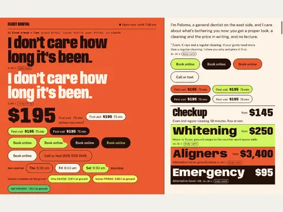
V1, blood orange and lime. 1440 wide. Out: reads tomato before it reads orange, and sits close to one aligner chain's red.
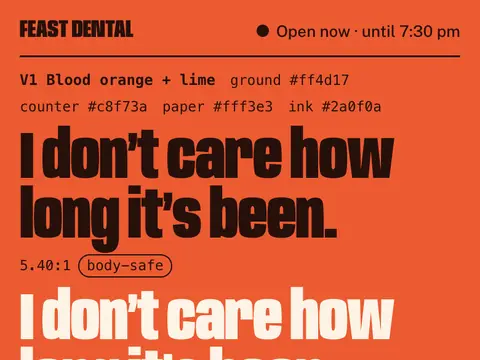
V1, blood orange and lime. 390 wide. Out: reads tomato before it reads orange, and sits close to one aligner chain's red.
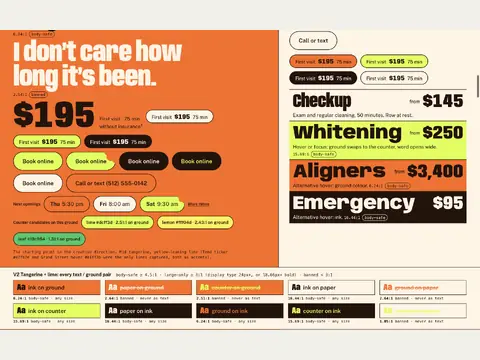
V2, tangerine and lime. 1440 wide. Picked, then tuned. Contrast check.
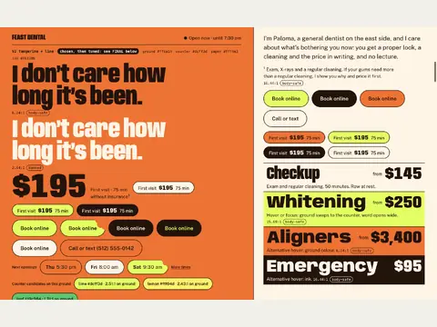
V2, tangerine and lime. 1440 wide. Picked, then tuned.
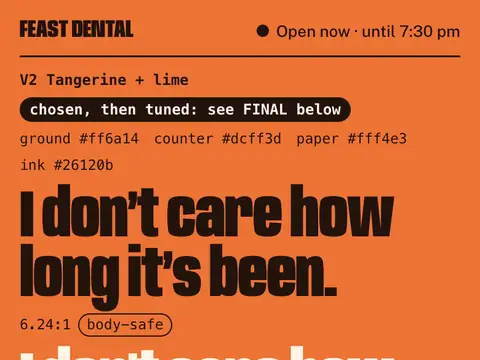
V2, tangerine and lime. 390 wide. Picked, then tuned.
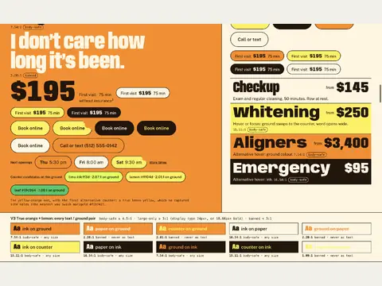
V3, true orange and lemon. 1440 wide. Out: a hazard sign. Lemon on that orange is 2.0:1 and the pills dissolve. Contrast check.
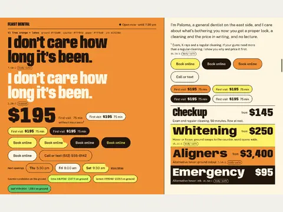
V3, true orange and lemon. 1440 wide. Out: a hazard sign. Lemon on that orange is 2.0:1 and the pills dissolve.
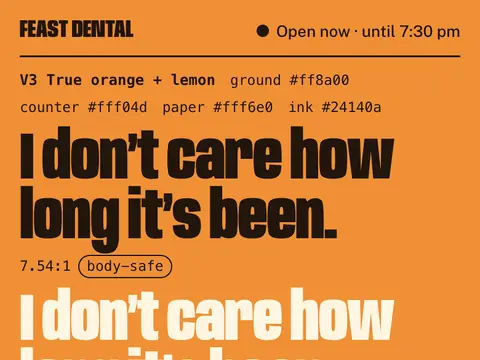
V3, true orange and lemon. 390 wide. Out: a hazard sign. Lemon on that orange is 2.0:1 and the pills dissolve.
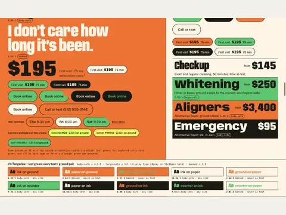
V4, tangerine and leaf green. 1440 wide. Out: the same lightness, so the two colours vibrate and the rows read as a flag. Contrast check.
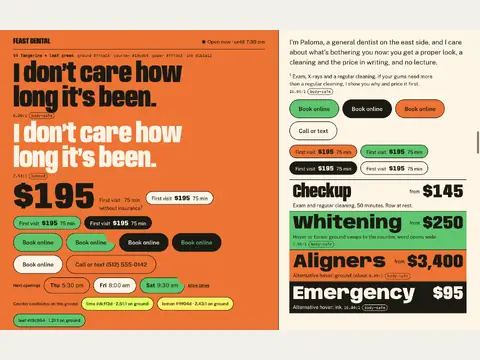
V4, tangerine and leaf green. 1440 wide. Out: the same lightness, so the two colours vibrate and the rows read as a flag.
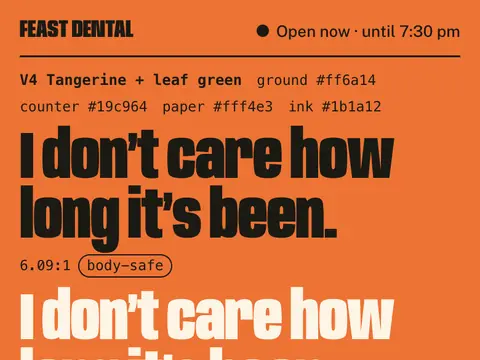
V4, tangerine and leaf green. 390 wide. Out: the same lightness, so the two colours vibrate and the rows read as a flag.
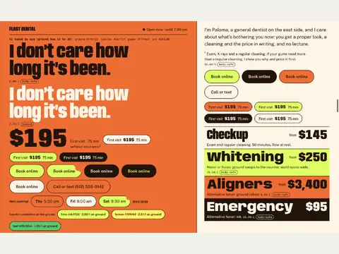
V5, V2 tuned by eye. 1440 wide. Before the photographs arrived.
Type: six display faces, four text faces
Each candidate set with the real headline at poster size. Anybody won for display because it held the whole first line and has width and weight axes to move on; Public Sans for text. Open the type specimen.
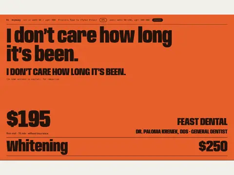
D1 Anybody. 1440 wide. Chosen: the only face that held the whole first line at 128px, and it can stretch.
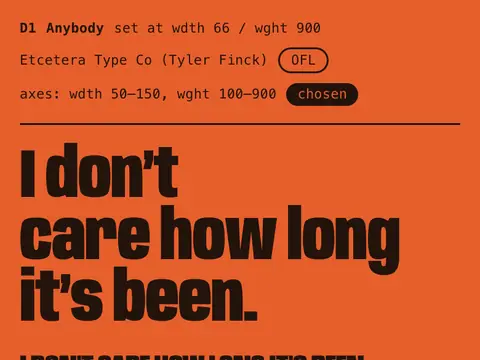
D1 Anybody. 390 wide. Chosen: the only face that held the whole first line at 128px, and it can stretch.
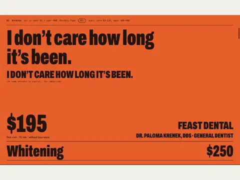
D2 Archivo. 1440 wide. Runner-up and fallback: the easiest read, but the compressed grotesque every poster already uses.
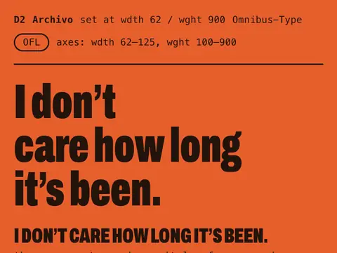
D2 Archivo. 390 wide. Runner-up and fallback: the easiest read, but the compressed grotesque every poster already uses.
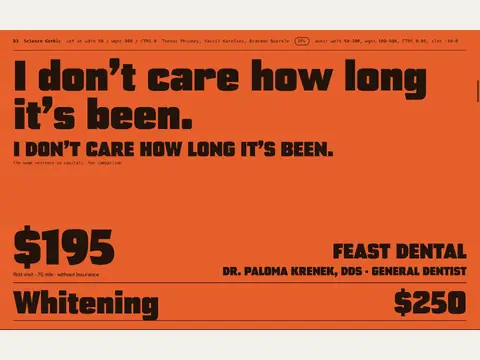
D3 Science Gothic. 1440 wide. Out: cold and technical.
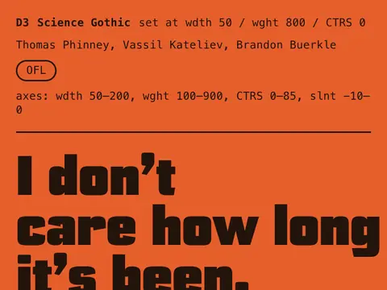
D3 Science Gothic. 390 wide. Out: cold and technical.
Show all 17
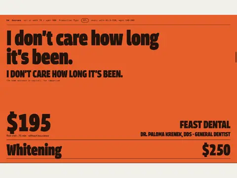
D4 Georama. 1440 wide. Out, narrowly: warm and rare, less presence at 128px.
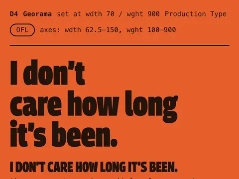
D4 Georama. 390 wide. Out, narrowly: warm and rare, less presence at 128px.
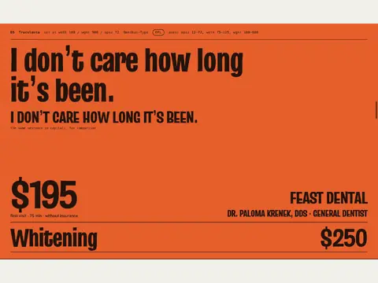
D5 Truculenta. 1440 wide. Out: reads as a cartoon title.
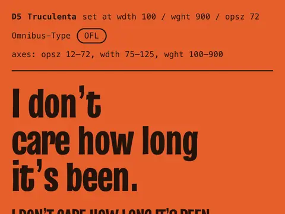
D5 Truculenta. 390 wide. Out: reads as a cartoon title.
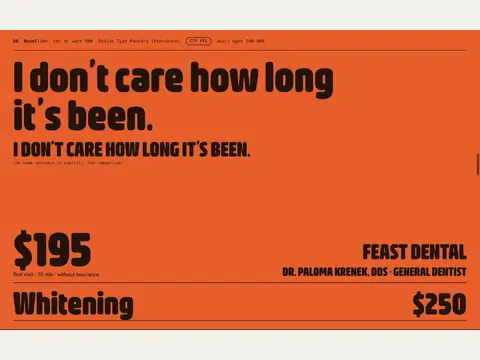
D6 Bevellier. 1440 wide. Out: its licence does not allow subsetting or converting the files.
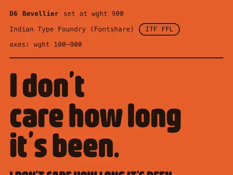
D6 Bevellier. 390 wide. Out: its licence does not allow subsetting or converting the files.
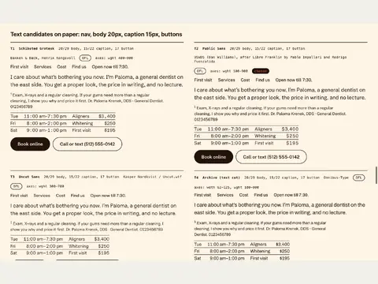
Four text faces. 1440 wide. Set as navigation, body, captions, the hours table and buttons.
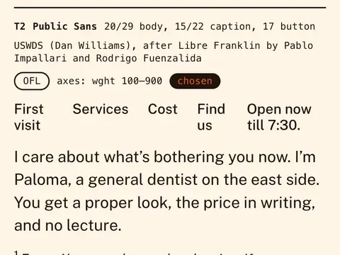
Public Sans. 390 wide. Chosen for text: even at 18 to 20px, with tabular figures that keep times and prices tidy.
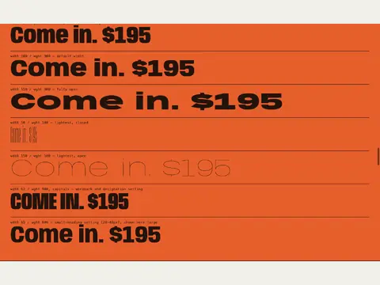
Anybody's axes. 1440 wide. Width and weight: the range the headline's motion uses.
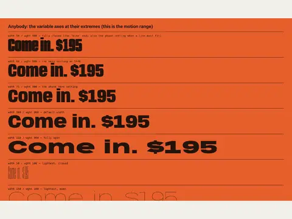
Anybody's axes. 1440 wide. Width and weight: the range the headline's motion uses.
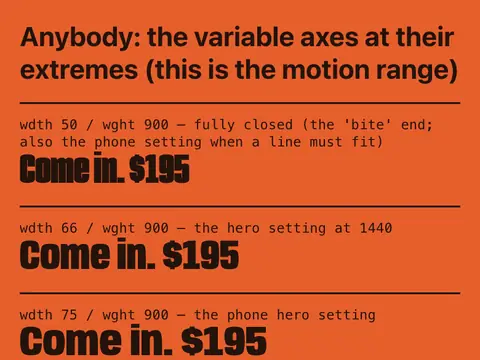
Anybody's axes. 390 wide. Width and weight: the range the headline's motion uses.
The name, the voice and the claims rules are in the brand core (the name was checked against web and US provider-registry searches; that is not a trademark clearance). The visual system is brand/02; the brief that started it, brand/00; every word on the page, the copy deck.
Every photograph directed. Four sent back.
Each frame had its own written art direction, with the palette as tokens that the generator received as exact colours. The prompt asked for ChatGPT image generation through Codex. Reference images kept the dentist's face the same from frame to frame. Then every frame was reviewed for representation and for the tells of generated images, and four went back.
Editorial still-life photograph, 4:5 portrait orientation. Subject: one Austin breakfast taco: a single small six-inch soft flour tortilla with light griddle marks, folded once in half around scrambled egg, diced fried potato and melted yellow cheese, a little green salsa. It is folded like a taco and open along its whole top edge, so the filling shows along its length. It is not rolled, not tucked at the end, not a burrito, not a wrap. A square of plain crumpled aluminium foil is peeled back under its lower end. A single clean bite out of its upper right end: a rounded scoop with a softly scalloped edge showing the filling. It reads as a bite someone enjoyed: nothing spilling, nothing torn, never a crisp shell. Props: only the foil; both lie directly on the paper. Backdrop: seamless paper sweep, flat saturated tangerine orange ({{TANGERINE}}), no gradient, no horizon line, no vignette. Lighting: hard direct on-camera flash, like a 1990s point-and-shoot. Crisp hard-edged shadow falling down and to the right. High saturation, sharp glints on the foil. Composition: the taco lies on a diagonal in the lower left, filling about half the frame width. The top and right thirds stay empty flat tangerine, kept clear for the page layout and a corner crop. Shot from a high angle, all in sharp focus. Feel: a real photograph on 35mm film with flash, fine natural grain, true-to-life texture. Not a 3D render, not an illustration, no glow, no bokeh. Must not appear: a rolled or closed tortilla, a burrito, a large tortilla, print on the foil, text, logos, plate, hands, people, a second taco, red sauce, scattered filling.
Rejected, and what replaced them
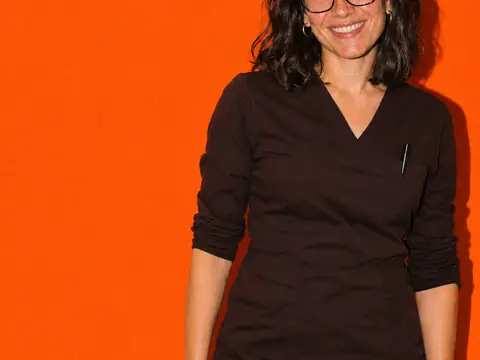
Rejected: the grin take. A full toothy smile: generated teeth in the hero of a dental page, against the brief's own rule.
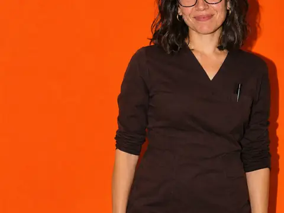
Shipped: the hero. Closed-mouth smile, eyes on the lens, empty hands. Its backdrop became the page's ground colour.
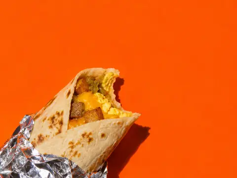
Rejected: a burrito. Right filling, wrong form: a rolled, closed tube. In Austin, fold against roll is the line people notice.
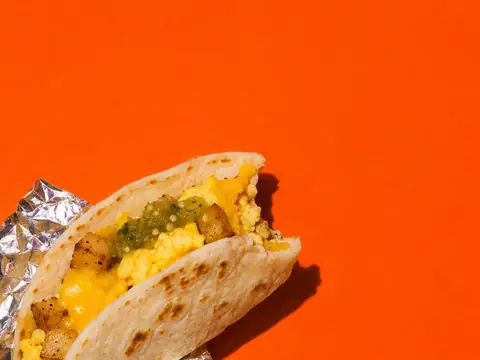
Shipped: a breakfast taco. Regenerated as a small flour tortilla folded once, open along the top.
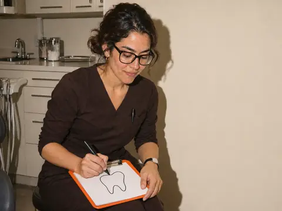
Rejected: a tooth icon. She was drawing a finished, symmetrical molar outline, and the frame drifted from the hero.
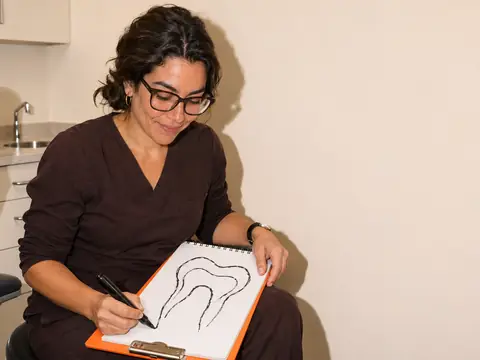
Shipped: the drawing. Sketching on a pad on her knee, beside the chair.
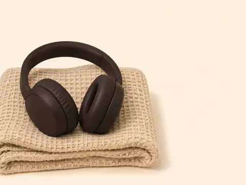
Rejected: a product render. No seam, hinge or wear.
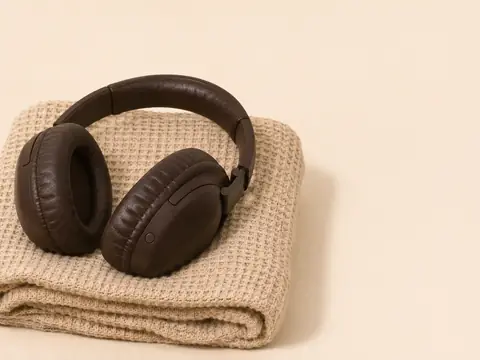
Regenerated, then not used. The Comfort section took a portrait of the dentist listening instead.
Tests, and everything else that was made
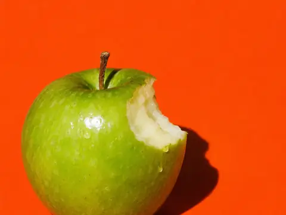
Test frame: apple. First try, to see whether the generator would hold the palette.
Test frame: portrait. First try at the dentist, before the reference images that kept her face the same.
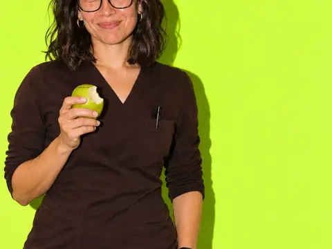
Shipped: Paloma, apple. Its lime backdrop became the page's counter colour.
Shipped: listening. The Comfort section's photograph.
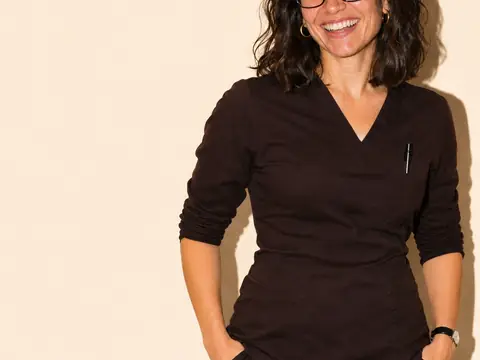
Used, then cut. The cold read found it repeated the hero's pose; it left the FAQ.
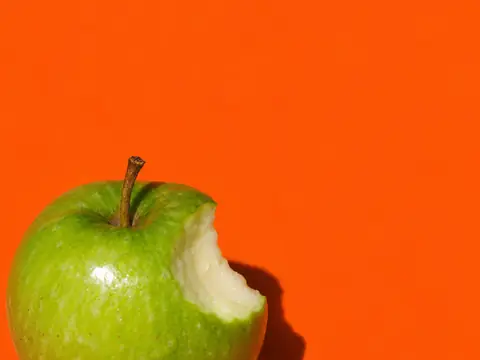
Shipped: apple.
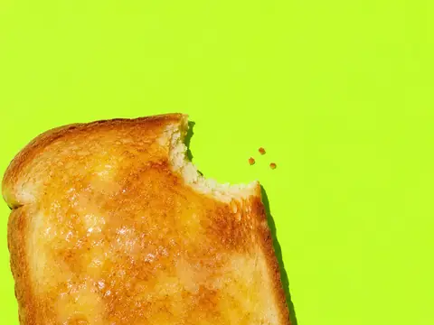
Shipped: toast.
Shipped: corn.
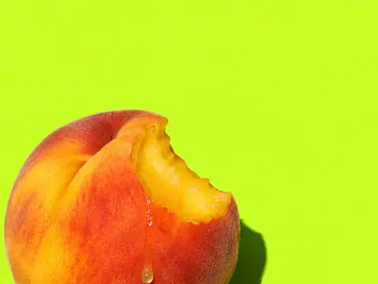
Shipped: peach. The closing section.
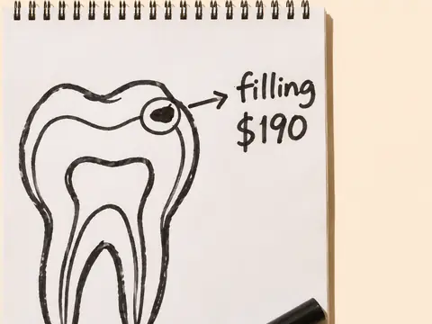
Shipped: the pad. The drawing a patient keeps.
Not used. The pad without handwriting.
Shipped, labelled as a stand-in. The front door. A real practice must replace it with a real photograph.
Where each one sits
Placement proofs: crop, notch corner and caption for every photograph, at desktop and phone width. Open the image specimen.
Hero, 1440 wide. Where each photograph sits, how it is cropped and what it is captioned.
Hero, 390 wide. Where each photograph sits, how it is cropped and what it is captioned.
Food strip, 1440 wide. Where each photograph sits, how it is cropped and what it is captioned.
Food strip, 390 wide. Where each photograph sits, how it is cropped and what it is captioned.
Comfort, 1440 wide. Where each photograph sits, how it is cropped and what it is captioned.
Comfort, 390 wide. Where each photograph sits, how it is cropped and what it is captioned.
Show all 23
Meet the dentist, 1024 wide. Where each photograph sits, how it is cropped and what it is captioned.
Meet the dentist, 1440 wide. Where each photograph sits, how it is cropped and what it is captioned.
Meet the dentist, 390 wide. Where each photograph sits, how it is cropped and what it is captioned.
The drawing, 390 wide. Where each photograph sits, how it is cropped and what it is captioned.
Dentist and cost, 1440 wide. Where each photograph sits, how it is cropped and what it is captioned.
Cost, 1440 wide. Where each photograph sits, how it is cropped and what it is captioned.
Cost, 390 wide. Where each photograph sits, how it is cropped and what it is captioned.
Find us, 1440 wide. Where each photograph sits, how it is cropped and what it is captioned.
Find us, 390 wide. Where each photograph sits, how it is cropped and what it is captioned.
FAQ, ruled, 1440 wide. Where each photograph sits, how it is cropped and what it is captioned.
FAQ, ruled, 390 wide. Where each photograph sits, how it is cropped and what it is captioned.
FAQ with portrait, 390 wide. Where each photograph sits, how it is cropped and what it is captioned.
FAQ, graded, 1440 wide. Where each photograph sits, how it is cropped and what it is captioned.
Closing, 1440 wide. Where each photograph sits, how it is cropped and what it is captioned.
Closing, 390 wide. Where each photograph sits, how it is cropped and what it is captioned.
Social card and favicon, 1440 wide. Where each photograph sits, how it is cropped and what it is captioned.
Favicon and avatar, 1440 wide. Where each photograph sits, how it is cropped and what it is captioned.
Verdicts and alt text: the inclusive visuals review. Every prompt: assets/img/prompts. Placement rules: brand/04.
Proved in the browser before it was built.
The designer drew every section as a proof in the browser at four widths. The developer prototyped the risky parts in Chromium, Firefox and WebKit before a line of the page existed: which mask technique draws the bite without a hairline, what the bite costs on a phone, how type stretches on a variable axis, and what everything looks like with no script and with reduced motion. Both prototypes still run: the bite and the interaction spec.
Design proofs
The bite, 1440 wide. Design proof, drawn in the browser before the page was built.
The bite, 1440 wide. Design proof, drawn in the browser before the page was built.
The bite, 390 wide. Design proof, drawn in the browser before the page was built.
Meet the dentist, 1440 wide. Design proof, drawn in the browser before the page was built.
Meet the dentist, 390 wide. Design proof, drawn in the browser before the page was built.
Dentist and 0 reviews, 1440 wide. Design proof, drawn in the browser before the page was built.
Show all 18
Footer, 1440 wide. Design proof, drawn in the browser before the page was built.
Footer, 390 wide. Design proof, drawn in the browser before the page was built.
Hero, 1024 wide. Design proof, drawn in the browser before the page was built.
Hero, 1440 wide. Design proof, drawn in the browser before the page was built.
Hero, 390 wide. Design proof, drawn in the browser before the page was built.
Hero, 768 wide. Design proof, drawn in the browser before the page was built.
Hours, 1440 wide. Design proof, drawn in the browser before the page was built.
Services, 1440 wide. Design proof, drawn in the browser before the page was built.
Services, 390 wide. Design proof, drawn in the browser before the page was built.
Steps and FAQ, 1440 wide. Design proof, drawn in the browser before the page was built.
Steps and FAQ, 390 wide. Design proof, drawn in the browser before the page was built.
0 reviews, 390 wide. Design proof, drawn in the browser before the page was built.
A. A static bite on a photograph
Four mask techniques on three box shapes; the one-tile SVG mask won because it leaves no hairline.
B. The bite on press
Pointer, keyboard and focus; the focusable element is never masked, so the focus ring stays whole.
rest · Chromium · 1280 wide.
rest · Chromium · 390 wide.
rest · Firefox · 1280 wide.
rest · Firefox · 390 wide.
focus · Chromium · 1280 wide.
focus · Chromium · 390 wide.
Show all 27
focus · Firefox · 1280 wide.
focus · Firefox · 390 wide.
focus · WebKit · 1280 wide.
focus · WebKit · 390 wide.
key · Chromium · 1280 wide.
key · Chromium · 390 wide.
key · Firefox · 1280 wide.
key · Firefox · 390 wide.
key · WebKit · 1280 wide.
key · WebKit · 390 wide.
press · Chromium · 1280 wide.
press · Chromium · 390 wide.
press · Firefox · 1280 wide.
press · Firefox · 390 wide.
press reduce · Chromium · 390 wide.
press reduce · Firefox · 390 wide.
press reduce · WebKit · 390 wide.
press · WebKit · 1280 wide.
press · WebKit · 390 wide.
rest · WebKit · 1280 wide.
rest · WebKit · 390 wide.
C. A shape eaten by scroll
IntersectionObserver against scroll-driven animation, with no script and with reduced motion.

io · Chromium · 390 wide · 0 bites.

io · Chromium · 390 wide · 1 bites.

io · Chromium · 390 wide · 2 bites.

io · Chromium · 390 wide · 3 bites.

io · Firefox · 390 wide · 0 bites.

io · Firefox · 390 wide · 1 bites.


Show all 48

io · Firefox · 390 wide · 2 bites.

io · Firefox · 390 wide · 3 bites.

io · WebKit · 390 wide · 0 bites.

io · WebKit · 390 wide · 1 bites.

io · WebKit · 390 wide · 2 bites.

io · WebKit · 390 wide · 3 bites.
nojs · Chromium · 1280 wide.
nojs · Chromium · 390 wide.
nojs · Firefox · 1280 wide.
nojs · Firefox · 390 wide.
nojs · WebKit · 1280 wide.
nojs · WebKit · 390 wide.
reduce · Chromium · 1280 wide · 3 bites.
reduce · Chromium · 390 wide · 3 bites.
reduce · Firefox · 1280 wide · 3 bites.

reduce · Firefox · 390 wide · 3 bites.
reduce · WebKit · 1280 wide · 3 bites.

reduce · WebKit · 390 wide · 3 bites.
sda · Chromium · 1280 wide · 0 bites.
sda · Chromium · 1280 wide · 1 bites.
sda · Chromium · 1280 wide · 2 bites.
sda · Chromium · 1280 wide · 3 bites.

sda · Chromium · 390 wide · 0 bites.

sda · Chromium · 390 wide · 1 bites.

sda · Chromium · 390 wide · 2 bites.

sda · Chromium · 390 wide · 3 bites.
sda · Firefox · 1280 wide · 0 bites.
sda · Firefox · 1280 wide · 1 bites.
sda · Firefox · 1280 wide · 2 bites.
sda · Firefox · 1280 wide · 3 bites.

sda · Firefox · 390 wide · 0 bites.
sda · Firefox · 390 wide · 1 bites.

sda · Firefox · 390 wide · 2 bites.
sda · Firefox · 390 wide · 3 bites.
sda · WebKit · 1280 wide · 0 bites.
sda · WebKit · 1280 wide · 1 bites.
sda · WebKit · 1280 wide · 2 bites.
sda · WebKit · 1280 wide · 3 bites.
sda · WebKit · 390 wide · 0 bites.

sda · WebKit · 390 wide · 1 bites.

sda · WebKit · 390 wide · 2 bites.

sda · WebKit · 390 wide · 3 bites.


D. The bitten time chip
Rest, hover and press, and the notch kept clear of the label.
rest · Chromium · 1280 wide.

rest · Chromium · 390 wide.
rest · Firefox · 1280 wide.
rest · Firefox · 390 wide.
hover · Chromium · 1280 wide.
hover · Chromium · 390 wide.

Show all 21
hover · Firefox · 1280 wide.
hover · Firefox · 390 wide.
hover · WebKit · 1280 wide.
hover · WebKit · 390 wide.
press · Chromium · 1280 wide.
press · Chromium · 390 wide.
press · Firefox · 1280 wide.
press · Firefox · 390 wide.
press · WebKit · 1280 wide.
press · WebKit · 390 wide.
reduce · Chromium · 390 wide.
reduce · Firefox · 390 wide.
reduce · WebKit · 390 wide.
rest · WebKit · 1280 wide.
rest · WebKit · 390 wide.
E. Type on a variable axis
Anybody, Archivo and Saira stretching, and what reduced motion leaves.
anybody · Chromium · 1280 wide.
anybody · Chromium · 390 wide.
anybody · Firefox · 1280 wide.
anybody · Firefox · 390 wide.
anybody · WebKit · 1280 wide.
anybody · WebKit · 390 wide.
Show all 21
archivo · Chromium · 1280 wide.
archivo · Chromium · 390 wide.
archivo · Firefox · 1280 wide.
archivo · Firefox · 390 wide.
archivo · WebKit · 1280 wide.
archivo · WebKit · 390 wide.
reduce · Chromium · 390 wide.
reduce · Firefox · 390 wide.
reduce · WebKit · 390 wide.
saira · Chromium · 1280 wide.
saira · Chromium · 390 wide.
saira · Firefox · 1280 wide.
saira · Firefox · 390 wide.
saira · WebKit · 1280 wide.
saira · WebKit · 390 wide.
The interaction spec, running
Press, squash, bite, crumbs, chips, steps and service rows, as brand/03 specifies.
chips · Chromium · 1280 wide.
chips · Chromium · 390 wide.
chips · Firefox · 1280 wide.
chips · Firefox · 390 wide.
chips · WebKit · 1280 wide.
chips · WebKit · 390 wide.
Show all 58
portions specified above one sided below.
press bitten · Chromium · 1280 wide.
press bitten · Chromium · 390 wide.
press bitten · Firefox · 1280 wide.
press bitten · Firefox · 390 wide.
press bitten · WebKit · 1280 wide.
press bitten · WebKit · 390 wide.
press · Chromium · 1280 wide.
press · Chromium · 390 wide.
press · Firefox · 1280 wide.
press · Firefox · 390 wide.
press focus · Chromium · 1280 wide.
press focus · Chromium · 390 wide.
press focus · Firefox · 1280 wide.
press focus · Firefox · 390 wide.
press focus · WebKit · 1280 wide.
press focus · WebKit · 390 wide.
press sequence quarter speed.
press squash · Chromium · 1280 wide.
press squash · Chromium · 390 wide.
press squash · Firefox · 1280 wide.
press squash · Firefox · 390 wide.
press squash · WebKit · 1280 wide.
press squash · WebKit · 390 wide.
press · WebKit · 1280 wide.
press · WebKit · 390 wide.
ripple · Chromium · 1280 wide.
ripple · Chromium · 390 wide.
ripple · Firefox · 1280 wide.
ripple · Firefox · 390 wide.
ripple · WebKit · 1280 wide.

ripple · WebKit · 390 wide.
services hover · Chromium · 1280 wide.
services hover · Chromium · 390 wide.
services hover · Firefox · 1280 wide.
services hover · Firefox · 390 wide.
services hover · WebKit · 1280 wide.
services hover · WebKit · 390 wide.
steps · Chromium · 1280 wide.

steps · Chromium · 390 wide.

steps · Firefox · 1280 wide.

steps · Firefox · 390 wide.

steps nojs · Chromium · 1280 wide.
steps nojs · Chromium · 390 wide.
steps nojs · Firefox · 1280 wide.
steps nojs · Firefox · 390 wide.

steps nojs · WebKit · 1280 wide.
steps nojs · WebKit · 390 wide.
steps · WebKit · 1280 wide.

steps · WebKit · 390 wide.
touch services · Chromium · 390 wide.
touch services · WebKit · 390 wide.


Five mechanisms, and a stop button.
Bite, chew, open wide, ticker, accordion: nothing else moves. Prices never animate. The Comfort section never moves. A “Stop the motion” control stills the page and remembers it, and the system's reduced-motion setting does the same. The recordings below were made by the Whimsy Injector during its review, on builds before the final hero; its written review stopped when its model ran out of credits. The rules are in the interaction spec.
Hero entrance and headline chew. Recording at 1440 from 23:15, earlier build, before the lock-up. At about 3.3 s each headline word narrows to its tight width and springs back in reading order while the heading, its word cells and the line below stay put; the engines pass measured layout shift 0.
Book online: bite, then restock. Earlier build at 1440: Book online is pressed at about 2.6 s, takes its bite with three crumbs, and restocks about two seconds later. Measured in three engines: settles in 207 to 221 ms, crumbs gone by 255 ms, restock after 2 s.
The bite, frame by frame. Frames of the same press cropped to the button: lime at rest, then bitten in one step with three crumbs beside the notch, the label kept whole. The fill is ink because the pointer is still over it. Earlier build.
Picking a time, then changing it. Earlier build at 1440: Tue 5:45 pm is chosen at about 3 s (lime, a bite, crumbs) and every Book label becomes "Book Tue 5:45 pm"; Thu follows, and choosing Thu again clears it back to "Book online".
Three portions eaten on scroll. Earlier build at 1440: the page scrolls to the first-visit steps at about 4.4 s and the three discs bite in order, once each, when 60% of a step is in view. They do not replay on return.
A service row opens wide. Hover on Checkups, Services on paper: the row turns lime and the word opens from width 62.5 to 100 while the price and the row's rules stay where they are (measured to 0.2px). The second frame catches the fill mid-tween. Earlier build.
Pressing a row makes it chew. Press on Fillings: the word squeezes toward width 50 and springs back, the chew the headline does on load. The price and description do not move. Earlier build.
Services to the footer in one scroll. Earlier build at 1440, about 29 s: Services, Nervous is normal here, the lime dentist band, the "0 reviews" band, Cost, Find us, the FAQ with its portrait, the closing and the footer. Bracketed placeholders and the FAQ portrait were later removed.
One page, three files, no framework.
One HTML file, one stylesheet, one script. A generator made 147 image files in three formats from the sources, and a tighter crop of the hero for phones. Nine fallback faces were measured against the display font, one for each width it rests at, so a slow font moves the hero 2 pixels instead of 100; the final pass found Firefox faking bold on them and that was fixed too. The lead's own review shots show the page changing.
First look at the build, 22:16. The lead's first capture of the built page at 1440, earlier build: in this frame the display type is drawn in a stand-in sans, not Anybody. "$195" and a four-line designation beside her arm are already in place, as are the chips and the ticker.
First phone capture, 22:17. 390 wide, earlier build: at night the header reads "Opens Tue 11 am", which the persona walkthrough later asked to change to say that booking works now. The price sits over the photograph's empty third.
Bitten button and the demo notice. 22:18, earlier build: a time is chosen, "Book Thu 5:30 pm" has taken its bite, and the demo notice opens as an ink plate over the ticker's Pause tab, the overlap the design review later flagged.
1024: two lines on top of each other. 1024x768 at 22:19, earlier build: the one-line designation prints over the hours line beneath the subhead. The lead split them into separate rows before the design review, which called the fix better than its proof.
Services on tangerine, 22:50. The price list as first built on the tangerine field, with the designation, service words and prices all 72px. Within the hour Services moved to paper on the design review's advice. Earlier build.
320 wide, just before the lock-up. 23:17: the headline now fits at 320 and the night status wraps to two lines; the price label and the four-line designation still share the space beside the photograph. Earlier build.
Show all 12
The lock-up, built, 1440. 23:24: "$195" and GENERAL DENTIST at one size in one ruled block, the price on a paper plate to the page edge, as the design addendum proposed. The footnote still ends in a bracketed date. Earlier build.
Phone lock-up, first version. 390x844 at 23:25: GENERAL DENTIST on two lines over the photograph, "$195" on a full-bleed plate, then the openings. In this version the subhead follows the openings and the footnote is pushed further down. Earlier build.
Footnote moved up to the price. 23:37: the footnote now comes straight after the openings so it stays on the first screen with the price, and the subhead starts under the bar. The cold read later objected to this order; the lead kept it for the footnote. Earlier build.
768: a shorter band for the footnote. 768x1024 at 23:42: the photograph band capped at min(32vw, 290px) brings the footnote above the fold, one of the fixes logged with the lock-up. Earlier build.
Dentist band after the cold read. 00:10, fix round 7: the "How I work" list is gone from the lime band, leaving the bio, the pull line "Teeth are for biting. I keep them at it." and the drawing photograph.
FAQ without the third portrait. 00:10, fix round 7: the laughing portrait is removed and the FAQ is set as the visual system specifies, heading on the left and the questions on the right.
Thirteen reviews, while the page kept changing.
Reviews ran in parallel on the live page, and the page changed under them: one review was rewritten mid-way because its first findings were being fixed while it was still testing. Every reviewer wrote what it could not check as plainly as what it found. The screenshots below are a selection from about 2,000, chosen and captioned by a Visual Storyteller; the full reports are linked.
Seven frames that tell it
The hero as built, 1440. Before the lock-up: "$195" is set at 150px while "Dr. Paloma Krenek, DDS, General Dentist" is a 22px four-line label beside her arm. The designer's addendum on the General Dentist rule (22 TAC 108.55(b)) starts from this screen. Earlier build.
The lock-up, proposed at 1440. The designer's proposal, injected and measured at 23:13: "$195" and GENERAL DENTIST at one size (96px) in one ruled block, the price on a paper plate running to the page edge. This is the hero that shipped.
The blocker: chips leave the strip. Earlier build at 23:21, before the lock-up: at 1280 the chips wrap two and one, at 1024 the third chip lies across her arm ("pm" ink on a dark sleeve), and choosing a time wraps the buttons and grows the hero by 66px. E1 and E2 share one cause: the price cell grew with its caption.
Booking times slide onto her scrubs. Same overrides, scrolled to the strip: the grown hero scales the photograph up, so "Wed 8:00 am", "Thu 5:30 pm" and "More times" sit ink on dark brown at 1.0 to 1.2:1 and the Call number is 91% below 4.5:1. Earlier build.
Text spacing with the proposed fix. The auditor's CSS injected in one tab: the openings cell gets its own tangerine ground and the chips wrap, so no hero text sits on the photograph and the document stays 1440 wide. At rest no hero box moved at 1440 or 320. Earlier build.
One portrait on three walls. The hero, apple and laughing portraits side by side: same scrubs, pen, watch, framing and flash, only the wall and the expression change, which the reader called a generator signature (tell 2). The laughing frame was cut from the FAQ; the apple frame was kept to protect the palette. Earlier build.
Final hero in three engines, 1440. Chrome 157, Firefox 159 and WebKit 27.2 at 1440x900, page state 00:28, after the lock-up. "$195" and GENERAL DENTIST compute to the same 96px in all three, with no overlapping pairs in the hero.
The page passes the mechanical rules and speaks as the dentist throughout. Two British phrases out, one missing designation in, fifteen line edits.
The interpunct that reads as a dash. Services head at 1440, about 22:30: in the display face at weight 900 the middle dot draws as a short bar, so the designation reads "DR. PALOMA KRENEK, DDS - GENERAL DENTIST". Finding F2; the copy rules allow no dashes as punctuation. Earlier build.
Could this be a restaurant?. The closest call on a phone: the food strip between the "First visit $195" chip and the Services heading, with FEAST DENTAL in the sticky plate and the designation at display size below. The reviewer's answer was no, ship it as it is. Earlier build.
The third bite, the send-off. The closing band at 390: "Then go bite something." is the third of exactly three visible bite references the brand allows, worded as the brand core has it. The captions such as "Peach." name a food and do not count. Earlier build.
Two invented patients, one on a phone at 9:40 at night and one on a laptop mid-afternoon, with a five-second test and ranked changes. It calls itself a hypothesis to test, not research.
Persona A picks a time. Persona A on a phone at 9:40 pm Monday, earlier build: the Tue 5:45 pm chip turns lime with a bite and the bar now reads "Book Tue 5:45 pm". The reviewer called it the best interaction on the page; the header's "Opens Tue 11 am" with no word that booking works tonight became change 1.
Where Persona A almost left. The insurance switch set to "With insurance", earlier build: bracketed plan names, no channel for the card photo, and the "First visit $195" pill unchanged under "Check my insurance". Step A12, the moment the simulated visitor nearly closed the tab.
The drawing, nine screens down. The marker sketch of a tooth with "filling $190": the reviewer called it the best single piece of proof on the page, arriving at y 7,556, long after "You keep the drawing" was promised in step 3. Earlier build.
Where Persona B almost left. Persona B on a laptop at 1440, earlier build: the credentials are bracketed 14px text directly above a giant "0". Authority was the weakest element at the moment a comparing visitor needed it (step B7).
Chrome, Firefox and WebKit at five widths, by pointer, keyboard and touch, with no script, reduced motion, page zoom and forced colours.
One first screen, three engines. Chrome, Firefox and WebKit side by side at 1440x900, on a frozen copy of the files taken at 22:53. At 1440 and 1024 every one of the 14 sections came out within 1px across the three engines; earlier build, before the lock-up.
Headline cut off at 320 wide. Chrome, 320x568, earlier build: the headline is fixed at 56px, so "long" reads "lo", and the stacked name and designation print over "First visit · 75 min". Findings 3 and 2; the headline was capped at 14.4vw and verified at 23:20.
400% zoom: 320 CSS pixels wide. WebKit at 400% page zoom of a 1280 window, earlier build: the headline is cut at "lo" (finding 3) and the header and phone bar fill most of the 256px-tall view, which the accessibility audit later measured as 47% and fixed.
320 wide after the first fixes. The 320 first screen in Chrome, Firefox and WebKit at 23:09, after the headline cap (finding 3): the headline fits and the name clears the price label. Still the earlier hero, before the lock-up. Earlier build.
Forced colours: a backplate covers the label. Chrome with forced colours (dark), 1440 wide, earlier build. The $195 numeral's 0.86 line height puts its black text backplate over the "First visit · 75 min" label above it (finding 8); the photograph keeps its orange backdrop as a rectangle.
Service row hover in Firefox. Firefox, 1440: hovering Fillings turns the row lime and widens the word from 62.5 to 100 while the prices and row geometry stay put to 0.2px. Earlier build: the Checkups text still shows a "$[amount]" placeholder.
Three portions, bitten in order. WebKit, 1440: the three step discs after scrolling into view. Each bites when 60% of its step is visible, in order, 119 to 127ms apart, with no replay on return; the same in Chrome and Firefox.
Read the Texas dental advertising rules (22 TAC 108) on the state's own viewer. Fee dates, minimum-fee wording, the owner line, and the question that reshaped the hero: may $195 be larger than “General Dentist”?
The rule, at the primary source. 22 TAC 108.55 on the Texas Secretary of State's Administrative Code viewer, as of 11/09/2026: "General Dentist" must follow the name in a font no smaller than the largest used to identify the services advertised. A fetch helper had reported the sentence unconfirmed; the reviewer read it here and on Cornell LII.
Services: notation equals service words. Services at 1440 on the 22:17 build: the designation, the service words and the row prices are all 72px, which the reviewer read as meeting 108.55(b). The hero, at 150px for "$195" against a 22px notation, was the open question. Earlier build.

Fee inclusions run onto the portrait. Earlier build at 23:03, before the lock-up, after the fee disclosures were added: at 390 wide "exam, X-rays, regular cleaning" runs on one line across her dark scrubs and cannot be read. The engines reviewer measured the same overlap a minute later (finding 15).
Inclusions moved to the footnote. The 23:06 build: below 640 the caption reads "without insurance" and the footnote on the first screen carries the inclusions and "the fee is higher". Verified at 390; still the earlier hero, before the lock-up. Earlier build.


Title, structured data and local search, then a re-check after the page changed under it.

3 blockers, 10 should-fix and 17 could-fix; 24 fixed while the review was still running.
A chosen time pushes Book off screen. 1024 wide at 22:41 with Wed 8:00 am chosen: the header button takes the time's name and runs off the right edge. The 23:04 change (header button always "Book online", tighter gaps) fixed every case from 640 up; earlier build.
The g of long, clipped at 360. 360 wide, earlier build: the hero's overflow: hidden cuts the "g" of "long" by 5.2px (21.2 at 344, 45.2 at 320). CR-02, a blocker, fixed and measured at 0px at 320, 360 and 390.


Measured every section against the proofs, then designed the lock-up that set the price and GENERAL DENTIST at one size.
The hero as built, 1440. Before the lock-up: "$195" is set at 150px while "Dr. Paloma Krenek, DDS, General Dentist" is a 22px four-line label beside her arm. The designer's addendum on the General Dentist rule (22 TAC 108.55(b)) starts from this screen. Earlier build.
The lock-up, proposed at 1440. The designer's proposal, injected and measured at 23:13: "$195" and GENERAL DENTIST at one size (96px) in one ruled block, the price on a paper plate running to the page edge. This is the hero that shipped.
Header runs off the screen at 1024. Earlier build, 1024 wide at night with a time chosen: the header button becomes "Book Thu 5:30 pm", is cut at the screen edge and the page scrolls 57px sideways (the blocker). The chosen chip's notch also touches "pm" (item 6).
Header and chip, fixed by injection. The same state with the designer's CSS injected: the header button keeps "Book online" and ends at x 994, and an 18px notch below 1280 keeps the chosen chip clear of its label. Earlier build.
The designation printed on her arm. 1280x800, earlier build: "KRENEK, DDS" ends at x 963 and her forearm starts at x 957, so the S sits on skin. Item 2 proposed width 62.5 for the label; the lock-up later replaced it.
Tablet: the phone layout stretched. 768 wide as built: three steps take 917px, each with a 140px hole between numeral and title. Item 4 found every section from 640 to 1023 laid out this way; the page was 12,668px tall at 768. Earlier build.


Show all 14
Tablet steps as rows. The same steps with the proposed 640 to 1023 rules injected: numeral, text and portion on one row each. Across all sections the fix took the 768 page from 12,668px to 9,841px.
The zero band, four-line headline. 1440, earlier build: "reviews. I opened in October. Here's what I promise instead." runs four lines at display size and, with a fourth promise, the band is 1,078px tall; the "0" starts at x 67, off the 40px margin. Item 5.
The zero band with a deck. Item 5 injected on the 22:37 page: "0" and "reviews." become the statement, the rest drops to a smaller deck, and the numeral moves to the margin. With four promises the band measured 927px. Earlier build.
Whole-page rhythm, as built. The full 1440 page in three columns, earlier build: tangerine, paper, tangerine, paper, lime, ink, tangerine, paper, paper, tangerine. The designer counted five saturated fields, one too many, and called the alternation a template habit.
Rhythm with Services on paper. The same strip with Services moved to paper: one loud opening, a paper run broken by the food strip, a loud middle, a paper run, a loud close. The zero band's deck fix is also applied here. Earlier build.
The demo notice lands on Pause. 1440, earlier build: after Book online is bitten, the demo notice appears as an ink plate at bottom left, on top of the ticker's Pause tab. The designer asked for it to be restyled as the demo strip's twin.
Phone hero as built, 390x664. Earlier build, before the lock-up, on a short phone screen: the price sits over the photograph and the time chips fall behind the bottom bar (608 to 656 against a bar at 600).
Phone lock-up, 390x664. The proposal at the same size: GENERAL DENTIST at 48px on two lines over the photograph's empty third, "$195" at the same size on a full-bleed paper plate, and the chips at 535 to 583, above the bar. The subhead moves below the openings in CSS order only.


Three capture passes at six widths while the page kept changing: 1 blocker, 7 should-fix, 11 could-fix, and the team's own “looks generated” checklist, item by item.
The blocker: chips leave the strip. Earlier build at 23:21, before the lock-up: at 1280 the chips wrap two and one, at 1024 the third chip lies across her arm ("pm" ink on a dark sleeve), and choosing a time wraps the buttons and grows the hero by 66px. E1 and E2 share one cause: the price cell grew with its caption.
Labels against the photographs, by width. First pass, 22:51: "Paloma. Apple." crops at 1024 to 1600 and the hero designation at 1280 to 1520. The caption printed over her trousers (subject behind 74 of 100px at 1024) and the designation touched her forearm at 1280; both moved during the review window. Earlier build.
One long paper run at 1440. Pass 3 frames at 1440, 23:11: Services had moved from tangerine to paper, so First visit, the food strip, Services and Comfort read as one paper run. E5 asked for a decision, not a patch; bracketed placeholders like "$[amount]" are still in the copy. Earlier build.
Dentist band to Cost on a phone. Four pass-3 frames at 390: the three points, the "0 reviews" band and the start of Cost. Earlier build: the bracketed fill-ins ("[dental school, year]", "[number to confirm]") were later removed after the cold read.
Phone heroes at three heights. 390x844, 360x740 and 375x667 at 23:10, earlier build. At 390x844 the footnote clears the bar by 3px; at 375x667 the bar covers the chip row, which the spec allows because the buttons never leave.
Tablet: caption on her scrubs. 768x1024 at 23:15, earlier build: the price caption is 339px wide and its last word runs onto her dark scrub top (E19), and the footnote starts at 1010 against a 1024 fold (E3).


Show all 11
Designation breaks to three lines. Services heading at 360 wide: "DR. PALOMA KRENEK, / DDS / GENERAL DENTIST" where the spec asks for two lines with no interpunct. E4, should fix; two lines from 390 up. Earlier build.
A 2px break in today's rules. Today's row in the hours table at 4x: the ink rules above and below break for 2px where the day and time cells meet, from a 2px lime border on the day cell in a collapsed table. E7, should fix. Earlier build.
Service row: rest, 30ms, hover, focus. Services rows at 1440 on the 22:50 build, when the section was still tangerine: rest, hover after 30ms, hover, focus. The word opens from width 62.5 to 100 and the price and description keep the same rects. Earlier build.
Book button, every state. Primary and secondary buttons at 2x: rest, hover, focus, pressed, bitten at 45ms with three crumbs, bitten at rest, and bitten with the keyboard ring whole. The hover and pressed frames show a half-blended fill; E18 reports fills tweening from transparent. Earlier build.
Seam check, differences times 8. The hero at 1440 with colour differences from the field multiplied by 8: the flat field reads grey and the photograph's backdrop shows only grain. Field and backdrop differ by under one level per channel, with no edge at the 72px feather. Earlier build.


Load measured on a slow phone connection with a 4x slower processor, through a compressing server: the largest image at 1.64 seconds and no layout shift. The Performance Benchmarker recorded the first traces before its model ran out of credits; the lead finished.
Phone load on Slow 4G, frame by frame. Frames from the lead's trace at 390x844, Slow 4G, 4x CPU, compressed text: first paint and LCP (the hero image) at 1,639 ms, the display type a moment later, the headline chew by 2 s. Made from the screenshots in shots/performance-lead/trace-390-slow4g-4x-gzip-run1.json.gz. Earlier build.

Looked first and read the brief after. The design passes; 17 visible placeholders, a repeated portrait and repeated phrases gave it away. Fixed within the hour.
One portrait on three walls. The hero, apple and laughing portraits side by side: same scrubs, pen, watch, framing and flash, only the wall and the expression change, which the reader called a generator signature (tell 2). The laughing frame was cut from the FAQ; the apple frame was kept to protect the palette. Earlier build.
Cold read, first phone screen. The cold reader's first phone screen, 390x844, before reading any project document. Two tells in one frame: the footnote ends "Good through [Month D, YYYY]" (tell 1, blocker), and the lede only starts under the bottom bar, after the small print (tell 4). Earlier build.
Placeholders down the phone page. Contact sheet at 390, earlier build: credentials with four bracket slots, "Look me up" with three more, and "[What a deeper cleaning costs ... to confirm.]" in the Cost paragraph. The reader counted 17 visible brackets; all were written out or removed by 00:10.
A watch with no hands. Zoom on the apple portrait: a blank white dial with one dot and the crown in the wrong place, the same in four frames at about 15 to 25 CSS px on the page. Tell 7, could fix; the source photographs were left untouched as provenance.
A tap with no spout. The left edge of the comfort photograph at 1:1: a lever on a chrome body with no spout. No earlier review had listed it; it stayed, with the other retouching items, because the source files are not modified.
The headline chew, frozen. The load animation stopped at its tightest frame: each word squeezes narrow inside a fixed cell, 45ms apart, so gaps open between them. The reader listed it first among the things that must not be sanded off; the bracketed date in the footnote is still visible here. Earlier build.
The only cookie, after one and three bites. The footer cookie after one click and after three: each click takes a bite. The reader called it an Easter egg a person adds.


WCAG 2.2 AA: five should-fix problems found, all fixed, then re-checked by the same auditor. Lighthouse accessibility 100.
Booking times slide onto her scrubs. Same overrides, scrolled to the strip: the grown hero scales the photograph up, so "Wed 8:00 am", "Thu 5:30 pm" and "More times" sit ink on dark brown at 1.0 to 1.2:1 and the Call number is 91% below 4.5:1. Earlier build.
Text spacing with the proposed fix. The auditor's CSS injected in one tab: the openings cell gets its own tangerine ground and the chips wrap, so no hero text sits on the photograph and the document stays 1440 wide. At rest no hero box moved at 1440 or 320. Earlier build.
Every keyboard stop at 1440. The first accessibility pass at 23:21 cropped all 56 Tab stops at 1440, from Skip to content to the cookie, each with its 3px ring visible. Earlier build: the copy still holds placeholders such as "$[amount]"; after the 00:10 edits there were 53 stops.
Text spacing breaks the hero. Chrome at 1440 with the four WCAG 1.4.12 overrides, after the lock-up but before the fix: "long" runs past x 1440 and is cut by the hero's overflow, and the header's Book online is pushed 8px off the edge. Finding A1, should fix. Earlier build.
Text spacing at 320 wide. 320x568 with the overrides: "care how long" is cut at "lo", the name and GENERAL DENTIST overflow their fixed photo row and sit over "it's been.", and the header status takes three lines across its rule. Earlier build.
Forced colours hide the chosen time. Emulated forced colours at 1440 with Wed 8:00 am chosen: the chip loses its lime fill and looks like the other two except for an 18px notch; only the Book label says what was picked. Finding A2. Earlier build.


Show all 10
Chosen time in forced colours, fixed. The 00:30 re-check: the chosen chip now fills with the system Highlight colour and black text while the others stay outlines. A2 passes.
400% zoom: header and bar crowd in. 1280x1024 at 400% zoom (a 320x256 viewport): the sticky header and the phone bar take 120 of 256px, leaving about three lines of body text. Finding A4; the fix lets both scroll away below 480px tall. Earlier build.
Food strip focused, no ring. At 400% zoom real Tab lands on the food strip, but the strip is taller than the screen and its 3px ring, drawn 3px outside, is off-screen on all four sides. Finding A5, should fix. Earlier build.
Food strip ring drawn inside. The 00:30 build at the same zoom: the ring is drawn 3px inside the strip and shows along both edges, and the header and bar have scrolled away (A4). The demo notice at the foot is the reworked live region from A3.


Brought the copy deck and the specs in line with the build and found ten suspected page errors; eight were fixed.
108 loads across three engines, nine sizes, day and night: clean. Found that Firefox fakes bold on the fallback fonts, and fixed it.
Final hero in three engines, 1440. Chrome 157, Firefox 159 and WebKit 27.2 at 1440x900, page state 00:28, after the lock-up. "$195" and GENERAL DENTIST compute to the same 96px in all three, with no overlapping pairs in the hero.
1024x768 at night, three engines. The 00:28 state with the clock at 10:30 pm Central: the header reads "Booking's open all night" and the lock-up sits at 58px. The footnote ends 12.6 to 12.8px above the fold at this size (F5).
Final phone hero, 390x844. Chrome, Firefox and WebKit at 390x844, 00:28 state: GENERAL DENTIST and "$195" both about 48px, and the footnote ends at 747, above the bar at 780.
Short phone: chips clear the bar. 390x664 stands in for a 390x844 iPhone with its browser bars showing: the chips end at 581 to 582.6 against a bar at 600 in all three engines. The footnote falls below the bar here, which F4 records as built.
320x568, the smallest size. At 320x568 the lock-up computes to 40px and nothing scrolls sideways, but the chips sit 113px below the bar top and the footnote 236px below. F4 notes it; no change was proposed.
Forced colours on the phone. Forced colours at 390 in Chrome and Firefox, first screen and then a chosen, focused chip: text, rules, chips, the chosen chip (Highlight) and the focus ring all drawn in system colours. WebKit cannot emulate this mode.


Show all 10
Bite geometry change, before and after. Every bitten element at 1440 in Chrome with the old bite reach (40) and the new one (64), motion off and clock fixed. Pixel-identical except 21 anti-aliased pixels along the photograph's notch.
The notch at 8x, before and after. The bitten photograph's notch magnified 8x, old reach left and new right. The 21 changed pixels in Chrome differ by up to 102/255 in one channel, run to run the same, and the edge is equally sharp.
The wordmark plate at 5120 wide. Chrome at 5120 wide, old bite reach (top) and new (bottom): the code review's CR-20 found the plate outgrew its mask past about 4,790px, cutting off its leftmost 166px. With the reach raised to 64 the cut is 0 in all three engines.
Social card strip, reworded. The social card's demo strip before and after: it now matches the page's wording, "This practice and its dentist are fictional". Only that run's outlines changed when the lettering was regenerated.


Twelve rounds of fixes.
- 6:18 pmThe prompt. One message: research real dental practices, current motion, a young dentist with energy, generated images, a team, and not identifiable as AI-generated.
- 6:37 pmResearch starts. Live practice sites opened and measured in a browser; the market and the audience read in parallel.
- 7:15 pmDirection. Teeth are for biting. A palette nobody holds, a type that can move, five motion mechanisms, a never list.
- 8:27 pmPictures reviewed. Every generated frame checked for representation and for tells; four sent back.
- 10:20 pmBuilt, and seven reviews at once. Brand voice, persona, engines, compliance, SEO, code review and design review, all on the live page.
- 11:05 pmRounds 1 to 3. Voice, wording, fee disclosures, a phone header that overflowed at night, the first-visit discs, links on the price chips.
- 11:30 pmThe model runs out. Claude Fable 5.2 hits its usage limit and every agent stops mid-task. The session moves to Claude Opus 5.5; fresh agents pick up from the files the others left.
- 11:43 pmRounds 4 and 5: the hero. $195 and GENERAL DENTIST set at one size in one block. Old hero rules removed and 24 boxes measured unchanged at 13 sizes. Fallback fonts matched to the new type.
- 11:51 pmRound 6. A tighter crop of the hero photograph for phones: 20 kB instead of 35 kB, same framing.
- 12:10 amRound 7: the cold read. No more bracket placeholders, the third portrait out, the repeated list and buttons cut.
- 12:19 amRound 8: accessibility. Text spacing, forced colours, the demo notice, 400% zoom, the food strip's focus ring.
- 12:29 amRounds 9 and 10. Firefox's faked bold, eight page errors from the docs pass, a keyboard regression in the cookie.
- 1:10 amRounds 11 and 12. A shift when the script runs late on a phone, image sizes for tablets, the insurance switch at 320 wide.
- 1:37 amVerified. 108 loads clean in three engines. Published to GitHub Pages the next morning.
Every round, with what changed and why, is in the session log.
All of it.
- research/The market, the audience, 19 sites measured, motion techniques, the image review.
- brand/Creative direction, brand core, visual system, interaction spec, image placement, and 79 specimens.
- content/copy.mdEvery word on the page, with what a real practice must confirm.
- assets/img/prompts/The art direction for every generated photograph.
- prototypes/Two working prototypes and 182 screenshots across three engines.
- .ops/qa/The thirteen review reports.
- tools/The image, bite and route generators.